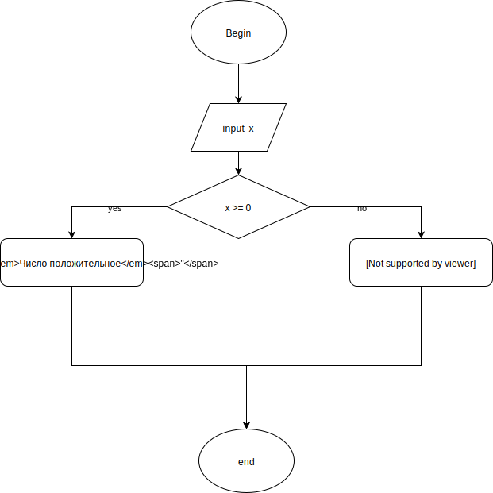
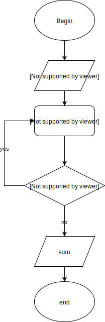

Нарисуйте блок-схему алгоритма, который проверяет значение входного параметра x, и если это значение больше или равно 0, то возвращает в качестве результата строку "Число положительное", в противном случае - строку "Число отрицательное.
Нарисуте блок-схему алгоритма суммирования 10 чисел, кратных 5 ( начиная с 0 ).
Напилите кодец, который работает с массивом произвольных целых чисел. Ваш скрипт должен вывести в консоль. все числа больше 50.
var numbers = [254, 115, 78, 25, 91, 45, 37]
for (var i = 0; i < numbers.length; i++) {
if (numbers[i] >= 50)
console.log(numbers[i]);
}